Календарь представляет собой способ измерения продолжительных временных отрезков, который базируется на повторяющихся астрономических явлениях: смене дня и ночи, фазах Луны, смене сезонов. Этот инструмент играет ключевую роль в жизни любого общества, помогая структурировать время, определять праздничные даты и планировать сельскохозяйственные работы.
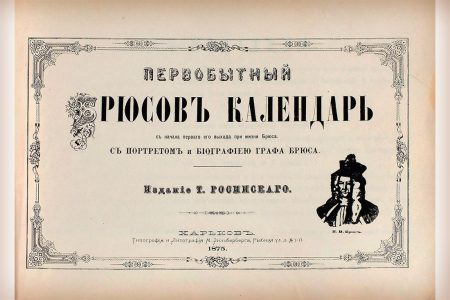
Календарь является важным культурным феноменом, отражающим мировоззрение эпохи и представления людей о времени. Развитие печатных календарей в России шло параллельно с распространением грамотности и книгопечатания, а также под влиянием господствующей идеологии.
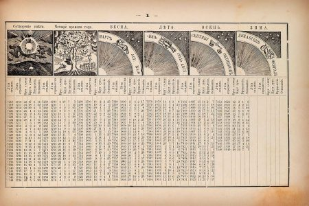
В 1491 году в Кракове была издана церковная книга «Часослов» с календарём на церковнославянском языке. Однако в России долгое время использовались рукописные календари. Первый подобный документ современного типа появился в 1664 году. В 1670 году для царя Алексея Михайловича был переведён с польского языка календарь под названием «Годовой розпись или месячило».
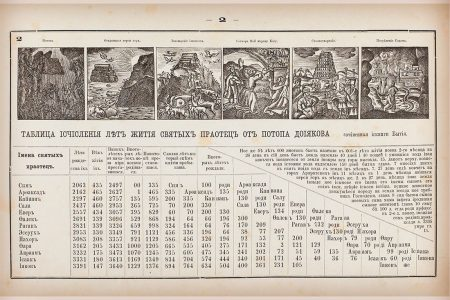
Календари того времени включали не только астрономические данные, но и астрологические прогнозы. Например, календарь 1689 года содержал рекомендации для земледельцев, врачей и охотников.
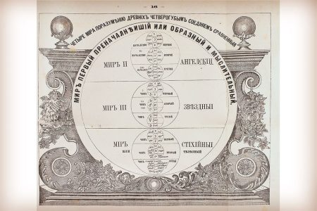
Реформы Петра I в 1699 году положили начало изданию первых печатных календарей в Москве. Они содержали информацию о солнечных и лунных затмениях, рассчитанную с учётом московского времени.
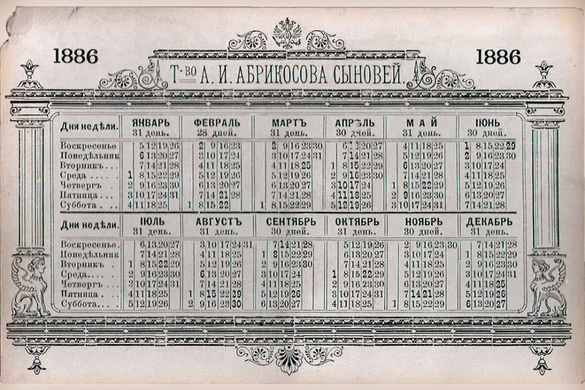
Массовое производство гражданских календарей началось в начале XVIII века. Первый такой календарь, изданный при участии Петра I, включал:
В 1709 году появился знаменитый настенный календарь, созданный под руководством Якова Брюса. Изданный типографом Василием Киприяновым, он представлял собой набор медных гравюр. Календарь сочетал научные знания с практическими рекомендациями и астрологическими предсказаниями.
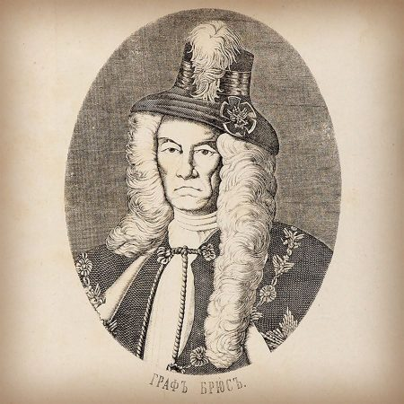
Народное прозвище «Брюс-колдун» отражало удивительную способность календаря совмещать науку и мистику. Этот календарь стал доминирующим и переиздавался до революции 1917 года.
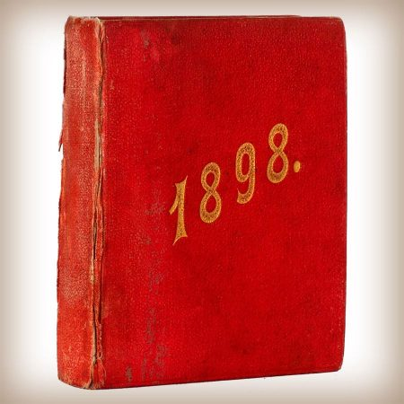
С 1713 года началось регулярное издание настенных календарей. После 1728 года исключительное право на их выпуск получила Российская академия наук. Календари содержали:
В 1780 году по инициативе Н.И. Новикова вышел «Экономический календарь» с практическими советами для горожан и сельских жителей.
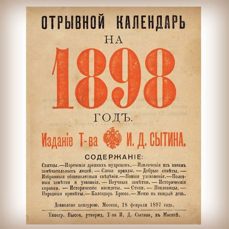
В конце XIX – начале XX века календарное дело переживало бурный рост. С 1865 года календари могли издавать частные предприятия. Крупнейшим издателем стал И.Д. Сытин, начавший выпуск календарей в 1884 году.
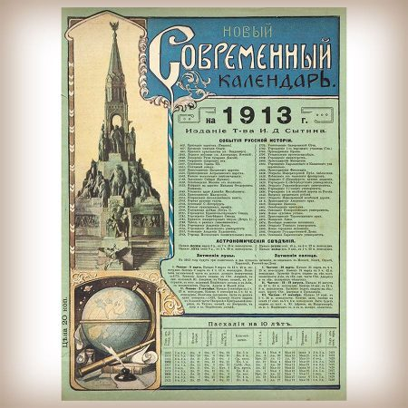
Сытин ввёл в обиход отрывные календари, содержащие:
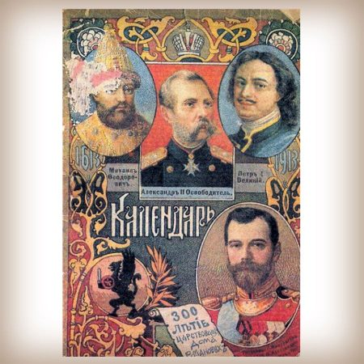
Его предприятие выпускало специализированные календари различных типов и достигало тиражей в десятки миллионов экземпляров. Появились также карманные календари двух типов:
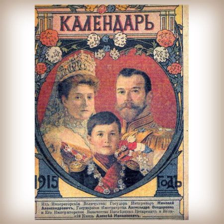
После революции 1918 года был введён григорианский календарь. Советские календари приобрели ярко выраженную идеологическую направленность. Они служили инструментом пропаганды и содержали:
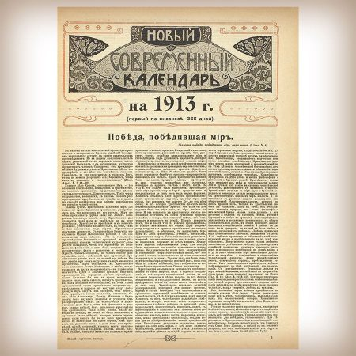
Издательство Сытина продолжало работу под прежней маркой до 1923 года. Календари стали важным средством воспитания «нового человека» и распространения коммунистических идей.
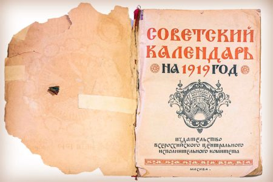
В наши дни календари претерпели значительные изменения, но по-прежнему остаются востребованным продуктом. Современные технологии печати позволяют создавать календари различных форматов и дизайнов:
Типография «Лазурь» предлагает профессиональные услуги по печати календарей любого формата и объёма. Мы располагаем современным оборудованием, которое позволяет:
Наши специалисты помогут вам:
Доверьте печать календарей профессионалам! Свяжитесь с нами прямо сейчас, чтобы обсудить ваш заказ и получить консультацию специалиста.